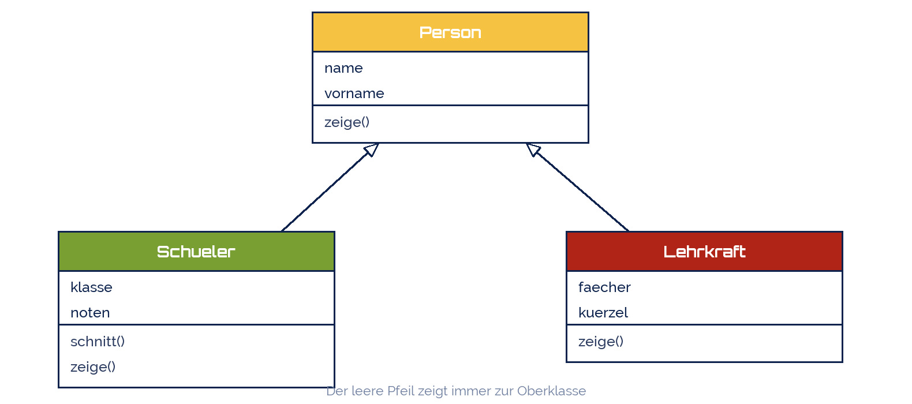

fotografierende
fotografierende
Good morning!
Nur das Schöne wird die Welt retten!
Fjodor Dostojewski
Nicht verzagen, Doc Alvers fragen!
Informatik — FOS 12
Objektorientierte Programmierung II
Vererbung, Kapselung, Polymorphie — und wann sich das alles lohnt
Nicht verzagen, Doc Alvers fragen!
Kapitel 01
Vererbung
Das Gemeinsame nur einmal aufschreiben
Nicht verzagen, Doc Alvers fragen!
Das Problem, das die Vererbung löst
Schüler und Lehrkräfte haben beide name, vorname, geburtsdatum und eine Methode zeige()
Zweimal dieselbe Klasse schreiben heißt: jede Änderung zweimal nachziehen
Vererbung: das Gemeinsame kommt in eine Oberklasse, das Besondere in die Unterklassen
Die Unterklasse erbt alle Attribute und Methoden und darf ergänzen oder überschreiben
Der Test dafür heißt ist-ein: Ein Schüler ist eine Person. Ein Auto ist kein Motor
Nicht verzagen, Doc Alvers fragen!
Ein Klassenbaum
zeige() steht dreimal da: die Unterklassen überschreiben die geerbte Methode
Alles andere aus Person gilt in beiden Unterklassen, ohne dass es dort steht

Nicht verzagen, Doc Alvers fragen!
Vererbung in Python
class Person:
def __init__(self, name, vorname):
self.name = name
self.vorname = vorname
def zeige(self):
print(f'{self.vorname} {self.name}')
class Schueler(Person): # Schueler erbt von Person
def __init__(self, name, vorname, klasse):
super().__init__(name, vorname) # Konstruktor der Oberklasse
self.klasse = klasse
self.noten = []
def zeige(self): # ueberschreibt die geerbte Methode
print(f'{self.vorname} {self.name} ({self.klasse})')Nicht verzagen, Doc Alvers fragen!
Die Fachbegriffe der Vererbung
| Begriff | im Beispiel | bedeutet |
|---|---|---|
| Oberklasse (Basisklasse) | Person | das Allgemeine, wird vererbt |
| Unterklasse (abgeleitet) | Schueler(Person) | erbt alles und ergänzt |
| Erben | self.name ist da, ohne dass es dasteht | Attribute und Methoden gelten weiter |
| Überschreiben | zeige() erneut definieren | die eigene Fassung gewinnt |
| super() | super().__init__(...) | ruft die Oberklasse auf |
Beim Aufruf sucht Python die Methode erst in der Unterklasse, dann in der Oberklasse
Vererbung erst einsetzen, wenn der ist-ein-Test wirklich stimmt
Nicht verzagen, Doc Alvers fragen!
Kapitel 02
Kapselung
Das Objekt bewacht seine eigenen Daten
Nicht verzagen, Doc Alvers fragen!
Warum Attribute nicht offen herumliegen sollten
Von außen direkt schreiben heißt: jede Regel lässt sich umgehen
konto.kontostand = 1000000 — und die Prüfung im abheben() war umsonst
Kapselung: Daten nach innen, Zugriff nur über Methoden, die die Regeln kennen
Python markiert Nichtöffentliches mit einem Unterstrich: self._kontostand
Das ist eine Vereinbarung, kein Schloss — in Java gäbe es dafür private
Nicht verzagen, Doc Alvers fragen!
Ein Konto, das sich wehrt
class Konto:
def __init__(self, inhaber, start=0):
self.inhaber = inhaber
self._stand = start # nicht oeffentlich
def einzahlen(self, betrag):
if betrag > 0:
self._stand = self._stand + betrag
def abheben(self, betrag):
if betrag > self._stand:
print('Nicht gedeckt')
return False
self._stand = self._stand - betrag
return True
def stand(self): # lesender Zugriff (Getter)
return self._standNicht verzagen, Doc Alvers fragen!
Was die Kapselung bringt
| Ohne Kapselung | Mit Kapselung |
|---|---|
| konto.stand = -500 ist möglich | abheben() lehnt ab, der Stand bleibt gültig |
| jede Stelle im Programm darf ändern | eine Stelle im Programm ändert |
| Regeländerung an 20 Stellen nachziehen | Regeländerung in einer Methode |
| Fehlersuche überall | Fehlersuche in der Klasse |
Fachwort: die Klasse hat eine Schnittstelle (die öffentlichen Methoden) und eine Implementierung (das Innere)
Von außen zählt nur die Schnittstelle — das Innere darf sich jederzeit ändern
Nicht verzagen, Doc Alvers fragen!
Kapitel 03
Polymorphie
Ein Aufruf, viele Antworten
Nicht verzagen, Doc Alvers fragen!
Derselbe Aufruf, verschiedenes Verhalten
leute = [
Schueler('Krause', 'Lena', 'FO12a'),
Lehrkraft('Alvers', 'Michael', 'INF'),
Person('Vogel', 'Tim'),
]
for p in leute:
p.zeige() # jedes Objekt antwortet auf seine Art
# Lena Krause (FO12a)
# Michael Alvers [INF]
# Tim VogelNicht verzagen, Doc Alvers fragen!
Was daran bemerkenswert ist
Die Schleife kennt die Klassen gar nicht — sie sendet nur die Botschaft zeige()
Jedes Objekt entscheidet selbst, welche Methode das ist: Polymorphie (Vielgestaltigkeit)
Eine neue Klasse Hausmeister(Person) läuft mit, ohne dass die Schleife geändert wird
Das ist der eigentliche Gewinn der OOP: Erweitern ohne Ändern
Voraussetzung: alle Klassen bieten dieselbe Schnittstelle an — hier die Methode zeige()
Nicht verzagen, Doc Alvers fragen!
Die vier Säulen im Überblick
| Säule | Frage | Werkzeug | Beispiel |
|---|---|---|---|
| Abstraktion | Was ist wesentlich? | Klasse entwerfen | Person hat name, nicht Schuhgröße |
| Kapselung | Wer darf ändern? | _attribut + Methoden | abheben() prüft die Deckung |
| Vererbung | Was ist gemeinsam? | class B(A) | Schueler ist eine Person |
| Polymorphie | Wer antwortet wie? | Methode überschreiben | jedes zeige() ist anders |
In der Klausur: Begriff nennen, in eigenen Worten erklären, am Beispiel zeigen
Nicht verzagen, Doc Alvers fragen!
Kapitel 04
Wann lohnt es sich?
Modularisierung und OOP im Vergleich
Nicht verzagen, Doc Alvers fragen!
Zwei Wege, ein Programm zu ordnen
| Modularisierung (LB 2) | Objektorientierung | |
|---|---|---|
| ordnet | Abläufe in Funktionen | Dinge in Klassen |
| Zustand | in Variablen des Hauptprogramms | im Objekt selbst |
| Erweitern | Funktion ergänzen | Klasse ableiten |
| Aufwand am Anfang | gering | höher — man muss modellieren |
| Gewinn | bei mittleren Programmen | bei vielen gleichartigen Dingen |
Faustregel: ein Ablauf → Funktionen. Viele Dinge mit eigenem Zustand → Klassen
Für ein 30-Zeilen-Programm ist eine Klasse Ballast — Ehrlichkeit gehört zur Bewertung
Nicht verzagen, Doc Alvers fragen!
Positioniert euch — mit Begründung
Wie würdet ihr eine Berechnung des Bremswegs schreiben — Funktion oder Klasse?
Und eine Schulverwaltung mit 600 Personen, Kursen und Noten?
Ein Spiel mit 30 Gegnern, die alle etwas anderes können?
Argumentiert mit Zustand, Anzahl und Erweiterbarkeit — nicht mit „ist moderner“
Das ist genau die Art Frage, die in der Klausur als Bewertung gestellt wird
Nicht verzagen, Doc Alvers fragen!
Vererbung spart Schreibarbeit, Kapselung schützt die Daten, Polymorphie macht Erweitern möglich, ohne Bestehendes anzufassen.
Merksatz
Nicht verzagen, Doc Alvers fragen!
Fun Facts: die drei Prinzipien
Barbara Liskov formulierte 1987, wann eine Unterklasse ihre Oberklasse wirklich ersetzen darf — das Liskovsche Substitutionsprinzip
Ein berühmtes Gegenbeispiel: Quadrat erbt von Rechteck — klingt richtig, geht schief, sobald man die Breite ändert
Mehrfachvererbung kann Python, Java nicht — wegen des Diamantproblems: von wem erbt man dann?
Polymorphie heißt auf Griechisch schlicht Vielgestaltigkeit und stammt aus der Biologie
Alan Kay sagte später, er habe bei OOP „an Botschaften gedacht, nicht an Klassen“
Nicht verzagen, Doc Alvers fragen!
Eure Aufgabe: der Klassenbaum
Baut die Klassen Person, Schueler und Lehrkraft wie im UML-Diagramm oben
Schueler bekommt noten und schnitt(), Lehrkraft eine Liste faecher
Beide überschreiben zeige() — testet die Polymorphie mit einer gemischten Liste
Kapselt die Noten: Eintragen nur über note_hinzufuegen(), das Werte außerhalb 1–6 abweist
Schreibt drei Sätze: Wann würdet ihr in diesem Programm ohne OOP arbeiten — und warum?
Nicht verzagen, Doc Alvers fragen!